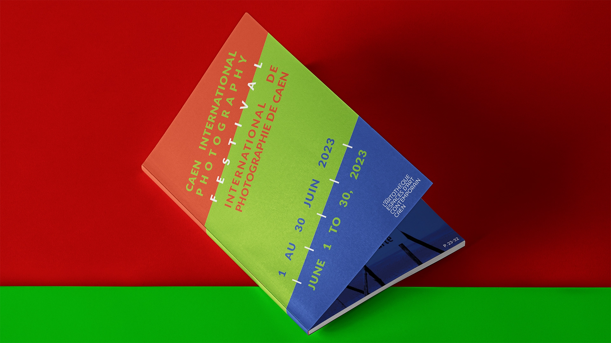

Livret
bilingue

Concept
Étant un festival de photographie, j'ai opté pour un axe démontrant les couleurs primaires de la photographie numérique, le vert, le bleu et le rouge.
Pour la conception de la partie bilingue de ce livret, j'ai décidé d'utiliser les couleurs afin de différencier les textes français des textes anglais.